1.6 Ionic - Metallic Bonding - Structure
Ionic lattices, bond strength, polarisation and metallic structures
1.6 Ionic - Metallic Bonding - Structure
本页对应 1.6 Ionic - Metallic Bonding - Structure.pdf.pdf，整理 evidence of ions、ionic bonding and structures、ionic bond strength、polarisation，以及 metallic bonding and lattices。专业词汇保留 English，重点建立 structure → bonding → property 的解释链。
Learning objectives
学完本页后，你应该能够：
- explain how electron transfer forms cations and anions；
- draw dot-and-cross diagrams and write formulae for ionic compounds；
- describe a giant ionic lattice and explain melting point、solubility、conductivity；
- relate ionic bond strength to ionic charge and ionic radius；
- explain polarisation and covalent character using cation polarising power and anion polarisability；
- describe metallic bonding and connect the metallic lattice to electrical conductivity、thermal conductivity、malleability and ductility。
1.6.1 Evidence of ions
Ionic compounds and lattices
An ionic compound forms when electrons transfer from a metal atom to a non-metal atom：
\[ \ce{Na -> Na+ + e-} \]
\[ \ce{Cl + e- -> Cl-} \]
The resulting cations and anions are held together by strong electrostatic attractions in all directions. The ions arrange themselves in a regular giant ionic lattice，not as separate molecules。
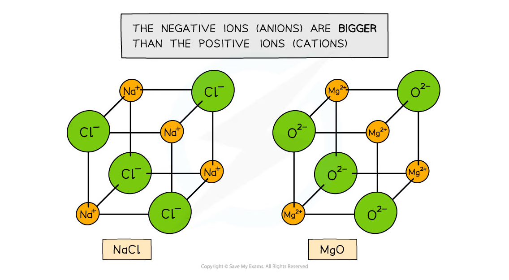
In a lattice，each ion is surrounded by ions of opposite charge. The overall crystal is electrically neutral：the total positive charge equals the total negative charge。
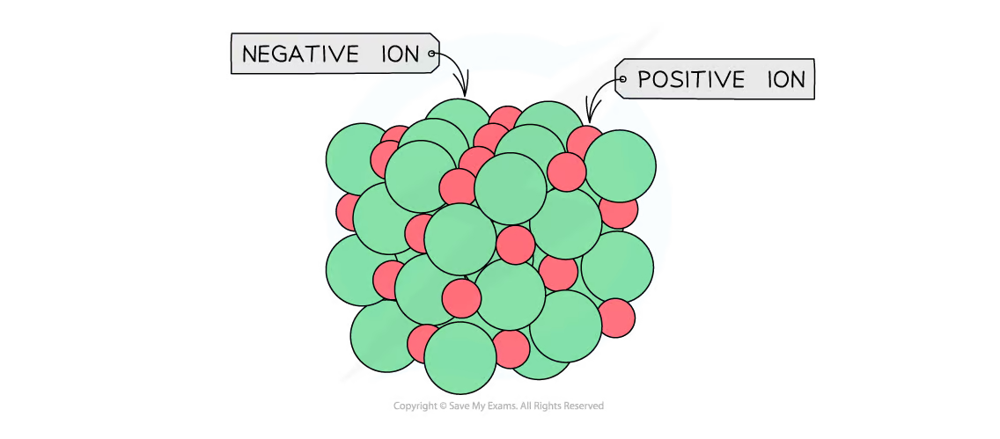
Physical properties of ionic compounds
- High melting and boiling points：many strong electrostatic attractions must be overcome。
- Brittle crystals：if layers shift，ions with the same charge can become adjacent and repel strongly，so the lattice fractures。
- Solubility in polar solvents：water molecules can form ion-dipole attractions with ions and separate them from the lattice。
- Electrical conductivity：solid ionic compounds do not conduct because ions are fixed in position；molten ionic compounds and aqueous solutions conduct because ions are mobile。
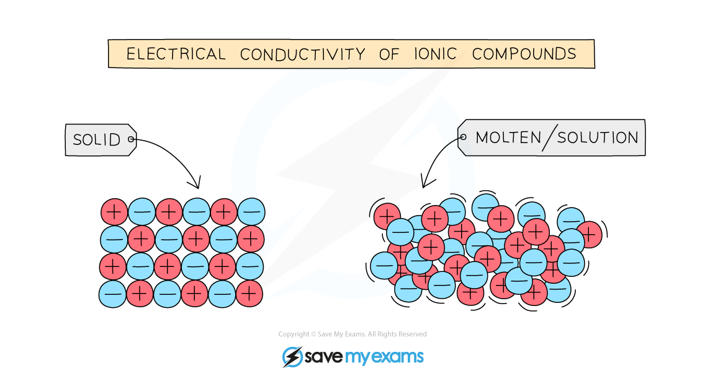
Dissolving in water
Water is a polar molecule. The oxygen end is δ− and the hydrogen ends are δ+。Water molecules orient themselves around ions：
- the oxygen end points towards a cation；
- the hydrogen end points towards an anion。
These ion-dipole attractions hydrate the ions and can overcome the attractions in the ionic lattice。
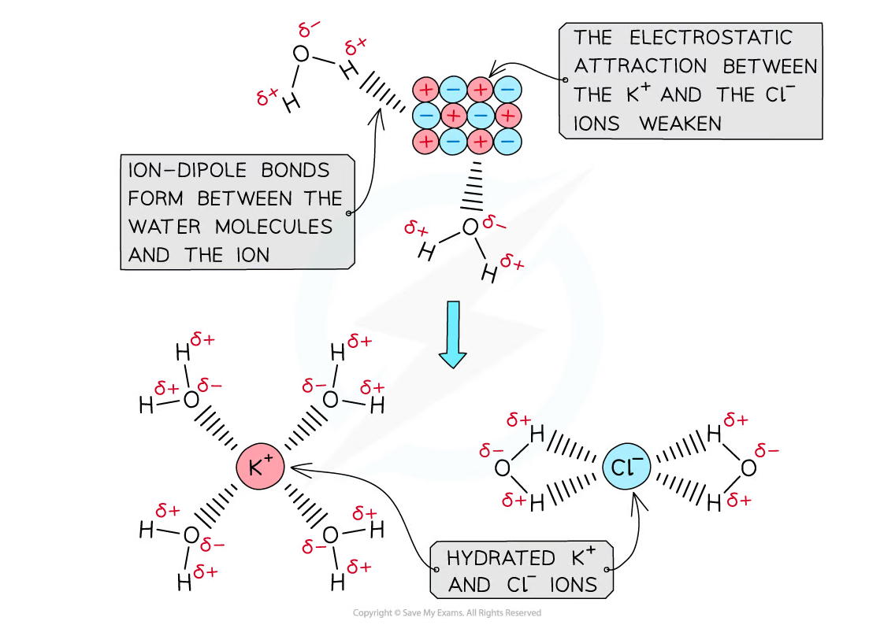
Not every ionic compound is equally soluble. Solubility depends on the balance between lattice attractions and hydration enthalpy。
Electrolysis as evidence of mobile ions
When an aqueous ionic solution is electrolysed，positive ions move towards the negative electrode (cathode) and negative ions move towards the positive electrode (anode)。
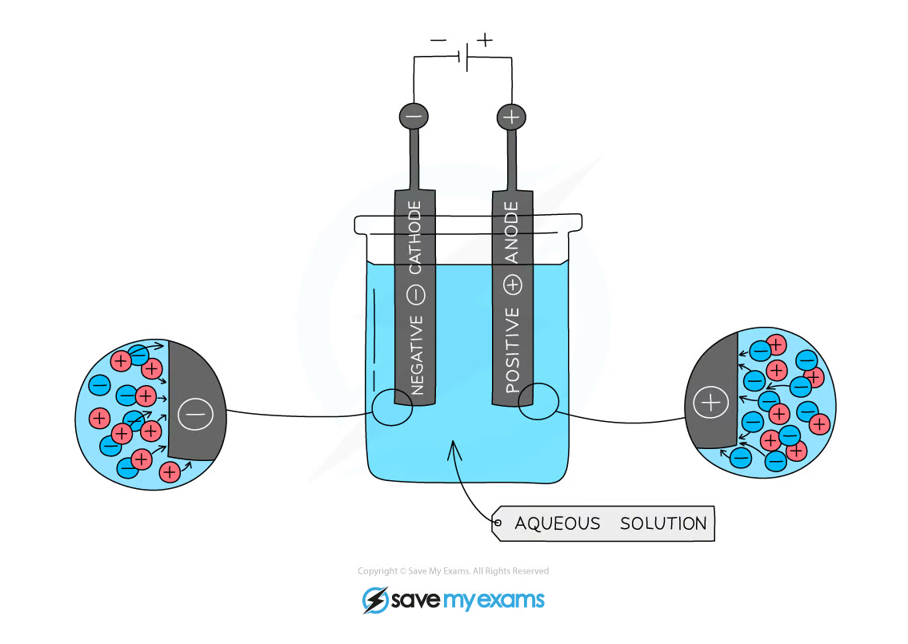
This movement of charged particles explains why molten and aqueous ionic substances conduct electricity。The ions carry charge through the liquid while electrons carry charge through the external circuit。
1.6.2 Ionic bonding and structures
Cation formation
Group 1 metals have one outer electron and tend to lose it：
\[ \ce{Li -> Li+ + e-} \]
The ion has a stable noble-gas electron configuration. The positive charge is shown in square brackets in a dot-and-cross diagram。
Anion formation
Group 16 non-metals have six outer electrons and tend to gain two electrons：
\[ \ce{O + 2e- -> O^{2-}} \]
Group 17 non-metals have seven outer electrons and tend to gain one electron：
\[ \ce{Cl + e- -> Cl-} \]
Dot-and-cross diagrams
Use dots for the electrons from one atom and crosses for the electrons from the other atom. Show the outer shell after electron transfer，the charge on each ion and square brackets around each ion。
For potassium chloride：
\[ \ce{K -> K+ + e-},\qquad\ce{Cl + e- -> Cl-} \]
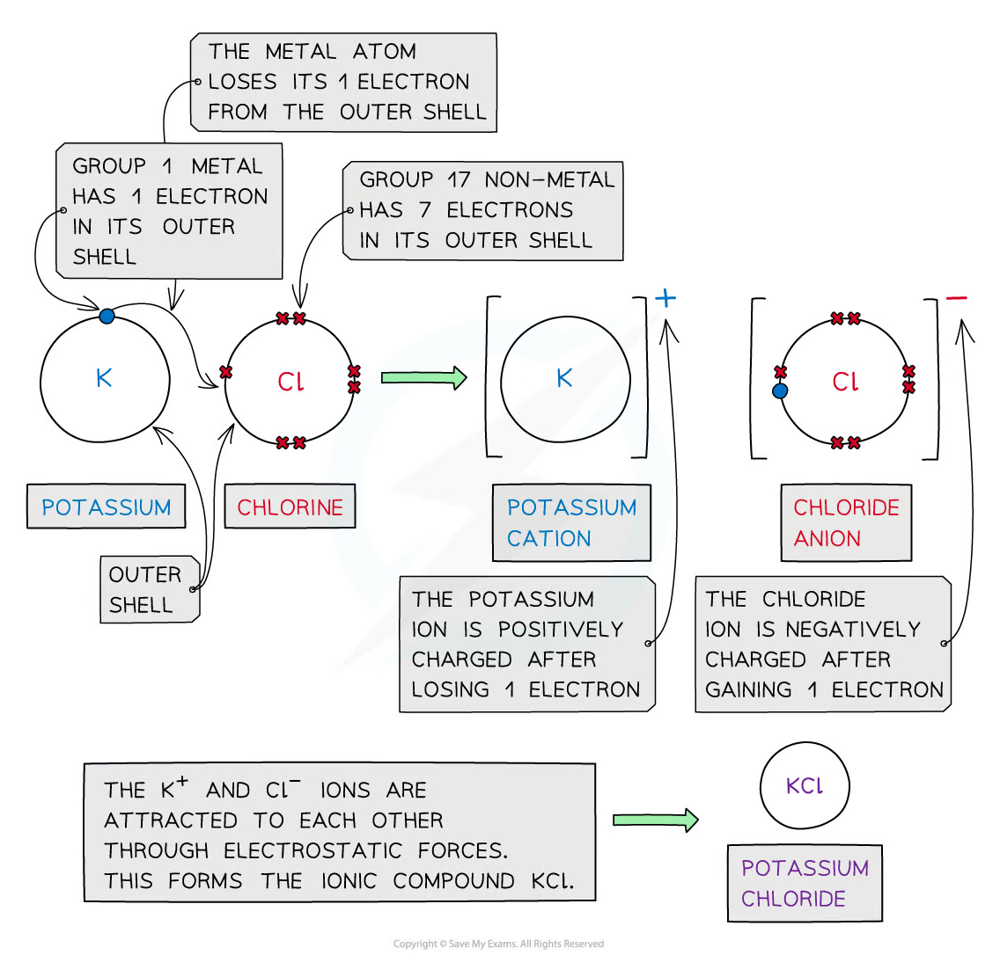
Writing ionic formulae
The formula must have the simplest ratio of ions that gives an overall charge of zero：
| Ions | Charge balance | Formula |
|---|---|---|
Na⁺ and Cl⁻ |
+1 : -1 |
NaCl |
Mg²⁺ and Cl⁻ |
+2 : 2(-1) |
MgCl₂ |
Ca²⁺ and F⁻ |
+2 : 2(-1) |
CaF₂ |
Al³⁺ and O²⁻ |
2(+3) : 3(-2) |
Al₂O₃ |
Li⁺ and N³⁻ |
3(+1) : -3 |
Li₃N |
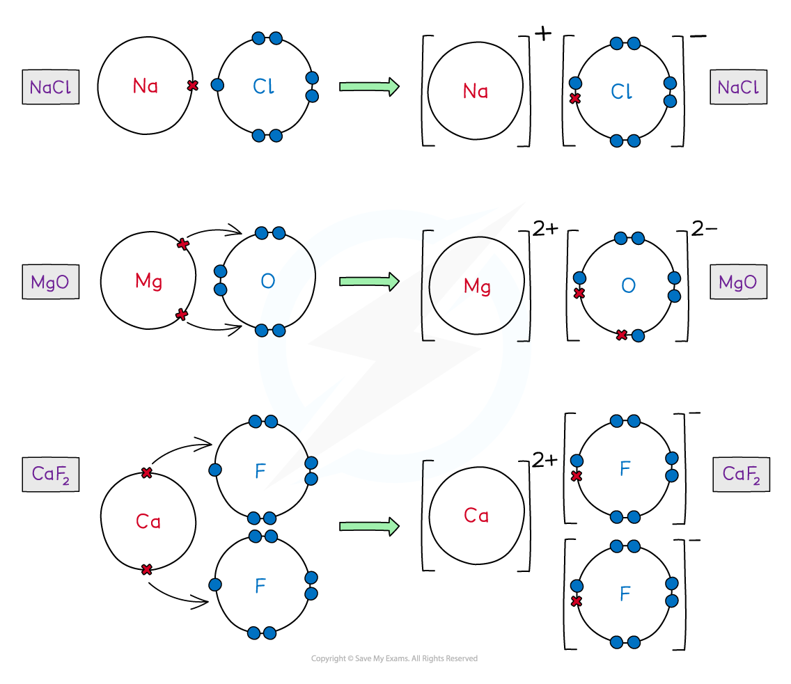
Do not write CaF or AlO because those formulae do not have balanced total charge。
Ionic lattice and charge balance
In a giant lattice，ions are evenly distributed and the electrostatic attraction extends throughout the structure。The formula gives the simplest ratio of ions in the lattice，not a discrete molecule。
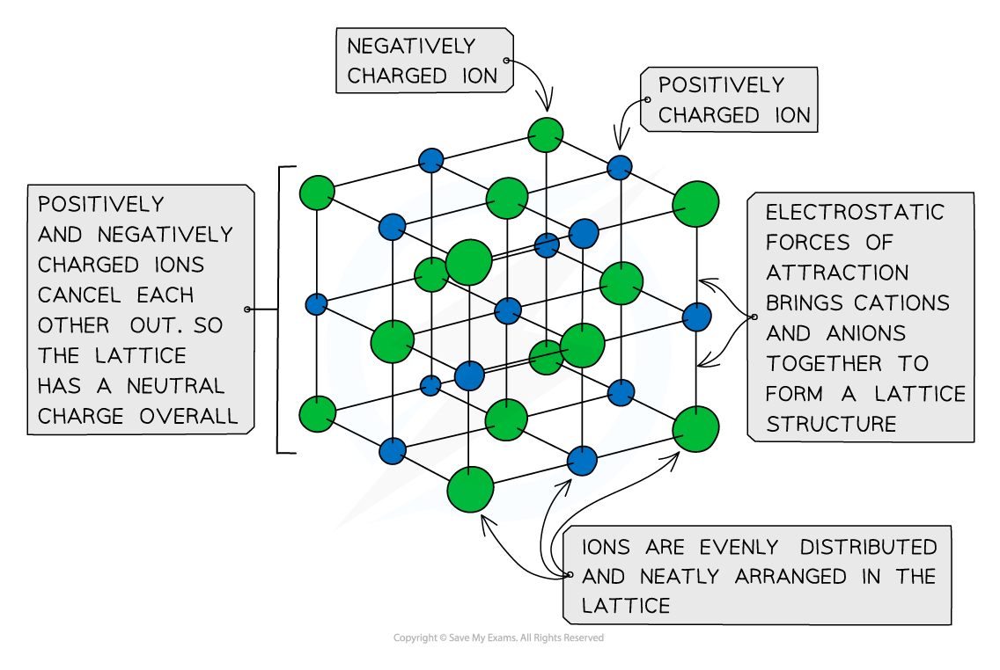
1.6.3 Ionic bond strength
The strength of attraction between two ions is affected mainly by ionic charge and ionic radius。
Ionic charge
Higher ionic charges produce stronger electrostatic attraction：
\[ \ce{Mg^{2+}}\text{ and }\ce{O^{2-}} \]
have stronger attraction than Na⁺ and Cl⁻ because the charges are larger。
Ionic radius
Smaller ions can approach more closely，so the electrostatic attraction is stronger。Across a period，atomic radius generally decreases because nuclear charge increases while electrons are added to the same shell。Down a group，atomic radius increases because additional shells are occupied。
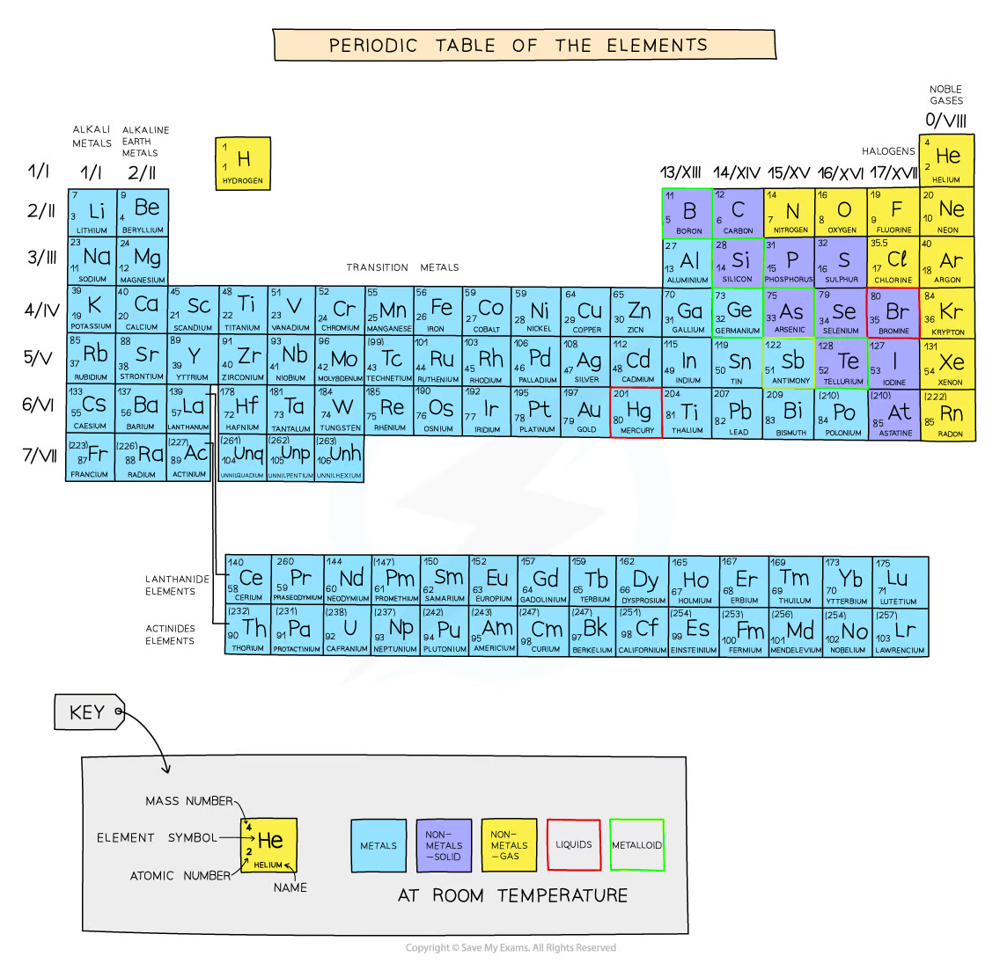
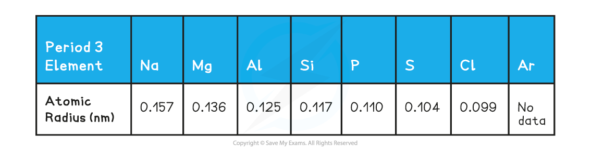
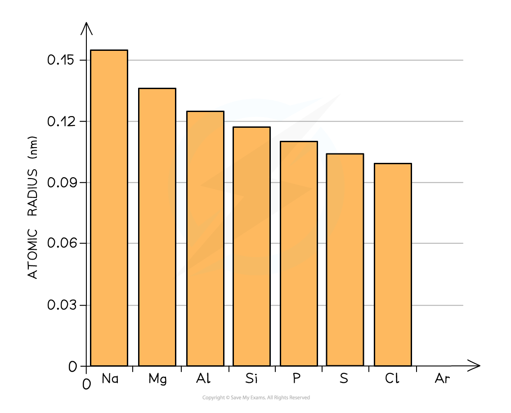
Atomic radius and ionic radius
- A cation is smaller than its atom because it has lost one or more electrons，often losing an entire outer shell。
- An anion is larger than its atom because added electrons increase electron-electron repulsion。
- In an isoelectronic series，the ion with more protons has the smaller radius because the same number of electrons is attracted by a greater nuclear charge。
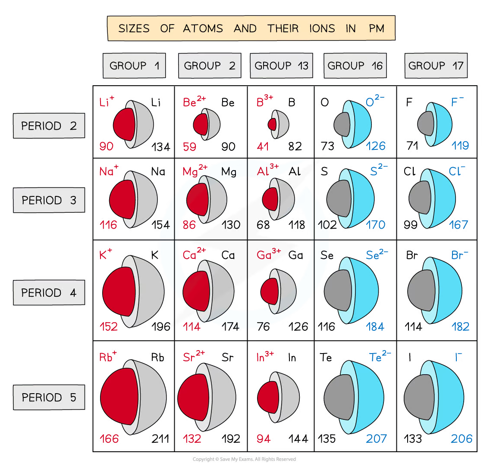
Coulomb-style explanation
The attraction increases when charge increases and distance decreases：
\[ F\propto\frac{q_1q_2}{r^2} \]
Therefore，a small highly charged cation and a small highly charged anion produce a strong ionic attraction，a high lattice enthalpy in magnitude and usually a high melting point。
1.6.4 Polarisation
Polarising power and polarisability
When a cation attracts the electron cloud of an anion，the anion becomes distorted. This distortion is called polarisation。
- Polarising power of a cation increases when the cation is small and has a high positive charge。
- Polarisability of an anion increases when the anion is large and has a high negative charge，because its outer electrons are further from the nucleus and more easily distorted。
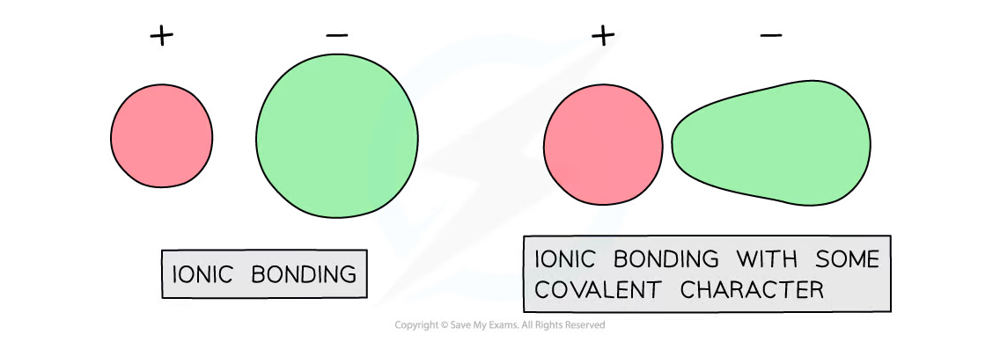
Greater polarisation gives the bond more covalent character. This is why a compound is not always completely ionic even when it contains a metal and a non-metal。
Applying the rules
Compare NaCl with AlCl₃：
Al³⁺is smaller and more highly charged thanNa⁺；Al³⁺has greater polarising power；- the chloride electron cloud is distorted more strongly in
AlCl₃； AlCl₃therefore has more covalent character thanNaCl。
Similarly，larger anions such as I⁻ are more polarisable than smaller anions such as F⁻。
1.6.5 Metallic bonding and lattices
Metallic bonding model
Metal atoms release their outer electrons into a delocalised electron cloud. The structure consists of positive metal ions in a regular giant lattice surrounded by mobile delocalised electrons。
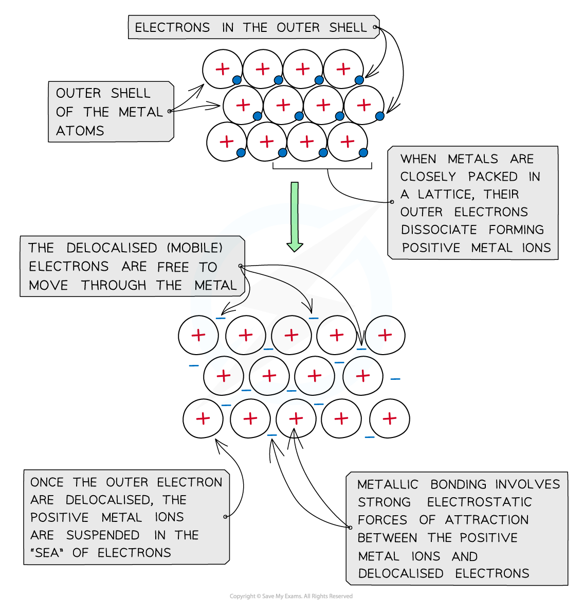
The electrostatic attraction between positive ions and delocalised electrons acts throughout the lattice. It is non-directional，so the layers of ions can move while the attraction remains。
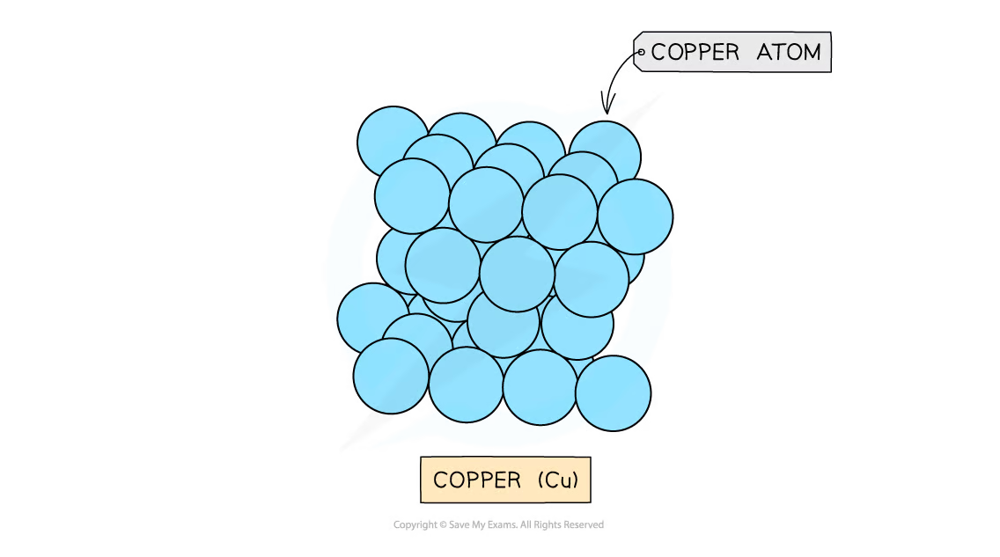
Properties of metals
| Property | Explanation |
|---|---|
| Electrical conductivity | Delocalised electrons are mobile and carry charge through the lattice |
| Thermal conductivity | Mobile electrons transfer kinetic energy rapidly through the lattice |
| High melting and boiling points | Strong electrostatic attraction between ions and delocalised electrons requires much energy to overcome |
| Malleability and ductility | Layers of positive ions can slide while metallic attraction is maintained |
| Variable strength and melting point | Metallic-bond strength depends on ion charge、ionic radius and number of delocalised electrons |
The metallic bonding model also explains why metals are sonorous and have a shiny surface，although the exact properties vary between metals。
Structure-property exam method
For any structure-property question，use the following sequence：
- Identify the structure：giant ionic、simple molecular、giant metallic or giant covalent。
- Identify the particles present：ions、molecules、atoms or delocalised electrons。
- Name the attraction or bond that must be overcome or that carries charge。
- Explain how the structure changes the strength or mobility of that attraction。
- Link the explanation to the observed property。
Example answer frame
An ionic solid does not conduct electricity because its ions are held in fixed positions in a giant lattice. When molten，the lattice breaks down and the ions become mobile，so they can carry charge and the liquid conducts electricity。
Common mistakes and exam checklist
Source note
本页面对应：Note per Chapter/Note per Chapter/1.6 Ionic - Metallic Bonding - Structure.pdf.pdf。页面中的 ionic lattices、dot-and-cross diagrams、conductivity、hydration、atomic/ionic radii、polarisation 和 metallic-lattice figures 均从该 PDF 的 embedded images 独立提取，并转换为 RGB white-background PNG 后保存到 assets/notes/ionic-metallic-structure/。